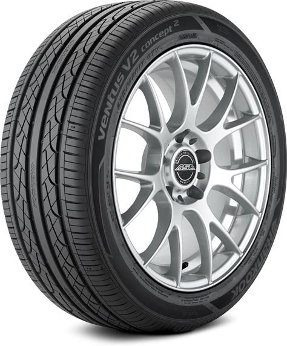
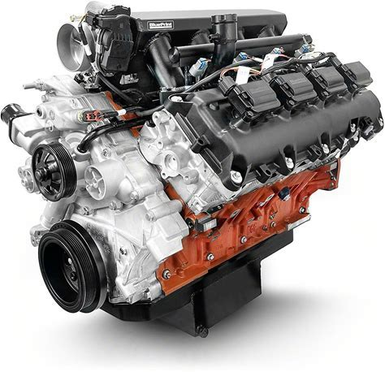
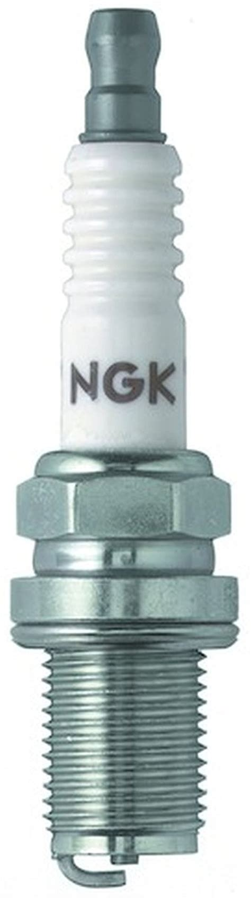

Ferrell and Sons: Wagons and Wheels
Home
About Us
Shopping Cart
Products
Login
Contact Us
  
User SignUp
We sell anything from fender's to whole engine blocks!
Click the button below to head to our store!
Our Product Stockpile!